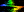

Back to
Construction of the Lorentz Transformation
Back to
Construction of the Lorentz Transformation
Forward to Fitzgerald-Lorentz Contraction
 Other Relativity and Black Hole links
| index | postulates | paradox | lightcone | simultaneity | time dilation | Lorentz | wheel | contraction | to do | glossary | home | links |
|
Wheel
This is a wheel. Each successive image in the movie is rotated by a small amount compared to the previous image. As the wheel rotates, the coordinates (x, y) of a point on the wheel relative to its centre change, but the distance r between the point and the centre remains constant r2 = x2 + y2 = constant . More generally, the coordinates (x, y, z) of the interval between any two points in 3-dimensional space (a vector) change when the coordinate system is rotated in 3 dimensions, but the separation r of the two points remains constant r2 = x2 + y2 + z2 = constant . |
|
Spacetime wheel
This is a spacetime wheel. The diagram here is a spacetime diagram, with time t vertical and space x horizontal. Each successive image in the movie is boosted by a small velocity compared to the previous image. Compare the motion of a point on this wheel to the motion of Cerulean , or indeed of any other grid point, on the spacetime diagram in the Lorentz grid transformation movie (29K GIF), or double-size version thereof (same 29K GIF), presented on the Construction of the Lorentz Transformation page. As the spacetime wheel boosts, the spacetime coordinates (t, x) of a point on the wheel relative to its centre change, but the spacetime separation s between the point and the centre remains constant s2 = - t2 + x2 = constant . More generally, the coordinates (t, x, y, z) of the interval between any two events in 4-dimensional spacetime (a 4-vector) change when the coordinate system is boosted or rotated, but the spacetime separation s of the two events remains constant s2 = - t2 + x2 + y2 + z2 = constant . The invariant spacetime separation s between two events is a rock in the sea of relativity, a quantity that remains the same for all observers, whereas time and space themselves differ for different observers. As such, the spacetime separation s is of fundamental importance in relativity. |
|
Lorentz boost as a rotation by an imaginary angle
Click here to make the displayed GIF equations below larger (20-24pt). The - sign instead of a + sign in front of the t2 in the spacetime separation formula s2 = - t2 + x2 + y2 + z2 means that time t can often be treated mathematically as if it were an imaginary spatial dimension. That is, t = iw (so -t2 = w2), where i is the square root of -1, and w is a `fourth spatial coordinate'.
A Lorentz boost by a velocity v
can likewise be treated as a rotation by an imaginary angle.
Consider a normal spatial rotation in which a primed frame
is rotated in the wx-plane clockwise by an angle a
about the origin, relative to the unprimed frame.
The relation between the coordinates
(w´, x´)
and
(w, x)
of a point in the two frames is
This provides a convenient way to add velocities in special relativity:
the boost angles simply add (for boosts along the same direction),
just as spatial rotation angles add (for rotations about the same axis).
Thus a boost by velocity
v1 =
tanh 1
followed by a boost by velocity
v2 =
tanh 2
in the same direction gives a net velocity boost of
v =
tanh ,
where
|
|
Trip across the Universe at constant acceleration
Suppose you took a trip across the Universe in a spaceship, accelerating all the time at one Earth gravity g. How far would you travel in how much time? The spacetime wheel offers a cute way to solve this problem, since the rotating spacetime wheel can be regarded as representing spacetime frames undergoing constant acceleration. Specifically, points on the right quadrant of the rotating spacetime wheel represent worldlines of persons who accelerate with constant acceleration in their own frame. If the units of space and time are chosen so that the speed of light and the gravitational acceleration are both one, c = g = 1, then the proper time experienced by the accelerating person is the boost angle , and the time and space coordinates of the accelerating person, relative to a person who remains at rest, are those of a point on the spacetime wheel, namely (t, x) = (sinh, cosh) . In the case where the acceleration is one Earth gravity g = 9.80665 m/s2, the unit of time is c / g = (299,792,458 m/s) / (9.80665 m/s2) = 0.97 years just short of one year. For simplicity, the table below takes the unit of time to be exactly one year, which would be the case if one were accelerating at 0.97 g = 9.5 m/s2 .
After a slow start, you cover ground at an ever increasing rate, crossing 50 billion lightyears, the distance to the edge of the currently observable Universe, in just over 25 years of your own time. Does this mean you go faster than the speed of light? No. From the point of view of a person at rest on Earth, you never go faster than the speed of light. From your own point of view, distances along your direction of motion are Lorentz-contracted, so distances that are vast from Earth's point of view appear much shorter to you. Fast as the Universe rushes by, it never goes faster than the speed of light. This rosy picture of being able to flit around the Universe has drawbacks. Firstly, it would take a huge amount of energy to keep you accelerating at g. Secondly, you would use up a huge amount of Earth time travelling around at relativistic speeds. If you took a trip to the edge of the Universe, then by the time you got back not only would all your friends and relations be dead, but the Earth would probably be gone, swallowed by the Sun in its red giant phase, the Sun would have exhausted its fuel and shrivelled into a cold white dwarf star, and the Solar System, having orbited the Galaxy a thousand times, would be lost somewhere in its milky ways. Technical point. The Universe is expanding, so the distance to the edge of the currently observable Universe is increasing. Thus it would actually take longer than indicated in the table to reach the edge of the currently observable Universe. Moreover if the Universe is accelerating, as recent evidence from the Hubble diagram of Type Ia Supernovae suggests ( Supernova Cosmology Project; High-Z Supernova Search), then you will never be able to reach the edge of the currently observable Universe, however fast you go. |
 Back to
Construction of the Lorentz Transformation
Back to
Construction of the Lorentz Transformation
Forward to Fitzgerald-Lorentz Contraction
Other Relativity and Black Hole links
| index | postulates | paradox | lightcone | simultaneity | time dilation | Lorentz | wheel | contraction | to do | glossary | home | links |
Updated 10 Feb 1999